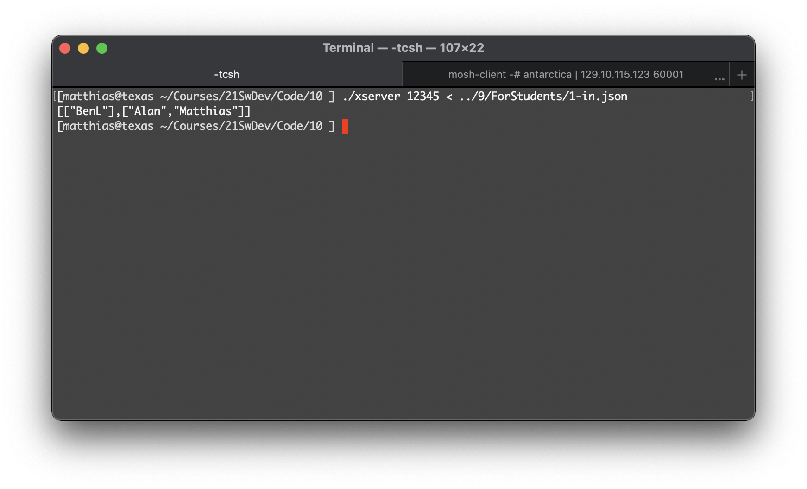

Software Development

From the first day of the semester forward we expect students (you) to visit this page once per 24 hours.
“To be any kind of professional means being willing to tell the client a truth he doesn’t want to hear.” – Holman W. Jenkins, Jr.

Sunday, December 19th, 2021 1:02:06pm
The End

Wednesday, December 8th, 2021 6:44:05am
Revised at 10:55am; the 6:44 version incorrectly divided max-score by total-score
#lang typed/racket (: final-grade ; compute the final grade from its pieces (Final Projects Presentations Panels LabBooks -> Percent)) (provide final-grade %) ; - - - - - - - - - - - - - - - - - - - - - - - - - - - - - - - - - (module+ test (require typed/rackunit)) ; - - - - - - - - - - - - - - - - - - - - - - - - - - - - - - - - - (define-type Final (U 0 1 2 3 4 5 6 7 8 10)) (define-type Projects [Listof Assignment]) (define-type Assignment (Pair ActualScore BaseScore)) (define-type ActualScore Exact-Rational) (define-type BaseScore Natural) (define-type Presentations [Listof OK]) (define-type Panels [Listof OK]) (define-type LabBooks [Listof OK]) (define-type OK (U 0 'ok+ 'ok 'ok- 'zero)) (define-type Percent Real) ; between 0.0 and 1.0 (define-type Ten 10) ; - - - - - - - - - - - - - - - - - - - - - - - - - - - - - - - - - (define (% {x : Real}) (/ x 100)) (define HOMEWORK (% 40)) (define PRESENTATION (% 20)) (define PANEL (% 20)) (define LAB (% 5)) (define FINAL (% 14)) (module+ test (define TOTAL (+ HOMEWORK PRESENTATION PANEL LAB FINAL)) (check-= TOTAL 0.99 0.001 "assert:: percentage total")) [define ok+ (% 99)] [define ok (% 94)] [define ok- (% 89)] [define zero (% 77)] ; - - - - - - - - - - - - - - - - - - - - - - - - - - - - - - - - - (define (final-grade the-code-walk projects presentations panels labs) (+ (* HOMEWORK (homework-grades projects)) (* PRESENTATION (okay-grades presentations)) (* PANEL (okay-grades panels)) (* LAB (okay-grades labs)) (* FINAL (/ the-code-walk 10)))) ; <<— magic (: okay-grades (-> [Listof OK] Percent)) (define (okay-grades oks) (/ (for/sum : Percent ((o : OK oks)) (grade-mapping o)) (length oks))) (: grade-mapping (OK -> Percent)) (define (grade-mapping o) (cond [(eq? o 'ok+) ok+] [(eq? o 'ok) ok] [(eq? o 'ok-) ok-] [(eq? o 'zero) zero] [else (% 0)])) (: homework-grades (-> [Listof Assignment] Percent)) (define (homework-grades grades) (define total-score ((inst sum-map Assignment) car grades)) (define total-max ((inst sum-map Assignment) cdr grades)) (4digits (/ total-score total-max))) (: sum-map (All (X) (-> (-> X Real) [Listof X] Real))) (define (sum-map f l) (apply + (map f l))) (: 4digits (-> Real Real)) (define (4digits x) (cast (string->number (~r #:precision 4 x)) Real)) ; - - - - - - - - - - - - - - - - - - - - - - - - - - - - - - - - - (module+ test ; The Perfect Student (: perfect-projects Projects) (: perfect-final-walk Ten) (define perfect-final-walk 10) (define perfect-projects (list (cons 100 100) (cons 120 120))) (define value-projects 1.0) (define perfect-presentations '(ok+ ok+)) (define value-presentations (/ (+ ok+ ok+) 2)) (define perfect-panels '(ok+ ok+ ok+)) (define value-panels (/ (+ ok+ ok+ ok+) 3)) (: perfect-labs LabBooks) (define perfect-labs '(ok+)) (define value-labs 1.0) (define perfect-grade (+ (* HOMEWORK value-projects) (* PRESENTATION value-presentations) (* PANEL value-panels) (* LAB value-labs) (* FINAL(/ perfect-final-walk 10)))) (check-= (final-grade perfect-final-walk perfect-projects perfect-presentations perfect-panels perfect-labs) ; - - - - - perfect-grade ; - - - - - 0.005))

Monday, December 6th, 2021 5:11:31pm
The schedule for the (part "finals") is now linked in.

Sunday, November 28th, 2021 4:10:44pm
Don’t forget that all TAs will hold consulting hours over the next two days so that you can check with them on your progress. See below for the schedule.
The remaining code walks will be about 8 —
Finally, here is how you can assess the workings of your client-server
system. Spawn two shells, run the server in one for a configuration for
9 —
You can run these processes on login-student but make sure to pick a random port in the range between 10,000 and 60,000 so as not to interfere with each other.
Once the tournament is over, the server is expected to print an appropriate JSON message to the terminal (see left screenshot):
 |
Compare the result with the expected outcome, as specified in a *-out.json file (see right screenshot). As you can see here, the actual and expected results are the same.
If you automate these steps, you are actually testing the client-server architecture. No need to do so; the sentence just once again clarifies the difference between experimenting and testing.
Our test harness will automatically run your scripts in a setup like the above.

Tuesday, November 23rd, 2021 8:04:43pm
You may wish to run your xmanager on these sample tests for 9 —

Friday, November 19th, 2021 10:10:43am
The week after Thanksgiving the TAs will hold office hours on Monday and Tuesday, equipped with a preliminary, coarse-grained rubric for Milestone 10. Try to meet with the TAs during one of those days. The TAs will use the rubric to ask you suggestive questions. The goal is to make sure you’re making progress in the right direction, both in terms of readability and correctness.
Monday, November 29
Tuesday, November 30
Neha
12:00 PM–1:00 PM
Satwik
01:00 PM–2:00 PM
Shobana
03:00 PM–4:00 PM
Manan
04:30 PM–5:30 PM
Eshwari, on Teams*
05:30 PM–6:30 PM
Sindhu
10:00 AM–11:00 AM
Somtoo
11:15 AM–12:15 PM
Darpan
12:30 PM–01:30 PM
Alanna
01:30 PM–02:30 PM
* Message Eshwari on Teams if you wish to meet with her.

Tuesday, November 16th, 2021 6:13:30pm
On Thursday (11/18) we will once again collect your log books.

Tuesday, November 16th, 2021 5:59:11pm
You may wish to run your xref on these sample tests for 8 —

Tuesday, November 16th, 2021 7:28:18am
Yes, software development and especially quality development can be on the wrong side of what you’d like.

Thursday, November 11th, 2021 10:29:00am
Here is a preview of the rest of the semester to help you plan:
8 —
The League is out. As always, please read, analyze, ask questions, and see a TA asap with your questions. In-person meetings are far superior to Pizza posts and emails. The next two milestones will be released simultaneously, together with the final partner switch instructions.
Milestone 9 has a due date but it is entirely optional, meaning you will not get graded on it. It exists only to set the proper pace for Milestone 10.
I will provide integration tests for the product of Milestone 9.
Milestone 10 will complete Trains.Com, a Plan.
In preparation of Milestone 10, we will give one more lecture (on remote proxies). It will explain the key idea of turning a monolithic (well-tested) system into a distributed system with a few lines of code.
Grading Milestone 10 will emphasize correctness much more than the previous evaluations, that is, there will be a heavier emphasis on the test fest.
We will reward robustness with bonus points.
The instructors will use the outcome of the test fest to start of the final code walks.
The final code walks will be conducted during the finals week. Each pair will conduct a code walk for their final code base with the instructor and a TA. Sign-up sheets will be posted sometime during the last two weeks of lectures.

Tuesday, November 9th, 2021 12:28:55pm
Megan & Ryan and David & Matthew are the first "winners" of double bonus points for finding a bug in my code base. They inspected the failing integration tests and noticed an off-by-1 error in mine. Congrats!
Cameron has re-run the test fest and has pushed (upwards and only upwards) revised scores into your repos. Notice that these points are for milestone 6, that is, the old pairs.

Thursday, November 4th, 2021 9:41:44pm
Tomorrow (Friday) morning you will receive an email that introduces you to your new partner and the assigned code base.
The on-boarder should conduct an overview code inspection with the on-boardee as soon as feasible. If the latter then decides that using his/her former code base would be preferable, switch roles so that the two of you can make an informed decision.
collect five sample project-design decisions that illustrate why the alternative code base is preferred to the assigned one;
formulate a justification why the decision of the alternative code base is superior and a two-line executive summary of this justification;
turn these five problem descriptions into an HTML memo addressed to your section’s instructor;
For the few cross-section pairs, address the memo to both.
send the memo and a request for a meeting to your section’s instructor by Saturday 08:00pm, CCing the on-boardee and the tech TA.
For the few cross-section pairs, send the email to both instructors.

Tuesday, November 2nd, 2021 4:21:52pm
You may wish to run your xstrategy on these sample tests for 6 —

Friday, October 29th, 2021 10:03:12am
6 —
every pair will consist of a partner who is new to the code base and a partner who has worked on the code base for the past six milestones. This second partner will on-board the first one.
some of the pairs currently working on 6 —
Games! will present their code base or manager design during the week of November 8.

Wednesday, October 27th, 2021 12:40:04pm
You may wish to run your xlegal on these sample tests for 5 —

Tuesday, October 26th, 2021 2:42:22pm
I (Matthias) have to switch my office hours from Wednesday to Thursday this week; I will still start at 430pm and stay until nobody’s left.
If you’re in trouble on Wednesday before the deadline, send email.

Wednesday, October 20th, 2021 8:18:50pm
The definition of Color used plain English, due to a programming mistake. For those who are curious, the specifications of such pieces are pulled in from the working solution and type-set in a programmatic fashion. The problem was essentially a single letter, rendering them seemingly as English rather than strings. I corrected for the mistake by changing the check for Color with a different predicate. The revised results should be out any moment now or are in your repo already.
Please visit the revised page and use the revised definition from now on.

Friday, October 15th, 2021 5:32:12pm
We have switched Darpan’s office hours from Wednesday to Tuesday. See Communicate.

Wednesday, October 13th, 2021 9:13:20pm
{ "a" : 1, |
"a" : 2, |
"a" : 3 } |
While such an object should be ruled illegal, our old specification of Maps allows such key duplication in one case. The test bed will not discover the duplication but it will assign one of the values randomly, and this may mean that your test case fails. If it succeeds by accident, it may fail implementations in other languages and come to our attention this way.
Do not submit such test cases.
Thanks, Cade.

Tuesday, October 12th, 2021 11:09:23am
You may wish to run your xmap on these sample tests for 3 —

Friday, October 1st, 2021 9:46:31am
The time for switching languages has passed. Only one or two pairs have taken the opportunity to submit a “memo of resignation,” which is about normal. So it’s time to post a Twitter (whatever that is) thingie that I have come across recently:
[Andrew is a bit of a language designer but mostly a security researcher.]
It is fine to stick with your languages but if you didn’t take the opportunity to find libraries that make your life as easy as my solutions indicate it should be, you have not truly accomplished the goals of the first phase of this course.
Spend some time on this problem. It will pay off large interest down the road.

Wednesday, September 29th, 2021 9:29:06pm
If you have to switch partnerships, you received an email by 6pm today.
Also, if you didn’t catch it class, 2 —

Sunday, September 26th, 2021 7:48:10am
Take a look at The Game: Trains, Trains.Com, a Plan, and 1 —

Friday, September 24th, 2021 3:21:41pm
Jacob C. discovered a typo in the TCP port specs of E —
Of course, this fix is completely irrelevant to you. We’d be foolish to check such an extreme case when the real purpose is to make sure you find a library for working with TCP I/O streams.

Friday, September 24th, 2021 10:08:39am
Notes for the lead-in Lectures are now available on-line.
The Lab Book section is now up-to-date. Please read the revision carefully. Start your lab book when you know who your initial partner is for the project.

Thursday, September 23rd, 2021 7:05:51am
Assignment E —

Tuesday, September 21st, 2021 3:03:31pm
We re-ran the test fest for C —

Saturday, September 19th, 2021 7:43:55am
Assignment D —
Please don’t forget to read the chapter on egoless programming.

Monday, September 13th, 2021 11:37:07am
Most of the TAs will start holding office hours this week. You can find them in from of WVH 308. See Communicate. Neha C. will start office hours next week.

Friday, September 10th, 2021 11:10:42am
A memo needs a header.
To: Ben Lerner, co-CEO, co-CTO, co-CfooO, co-CbarO of GamesGalore!
From: Matthias Felleisen, mere developer
Date: 8 September 2021
Subject: the choice of programming language
After a brief investigation of several languages with respect to the requirements document, our team has decided to use Racket for the first game project.
It addresses the stated requirements. Racket meets all four explicitly stated requirements. (1) When a Racket application is launched, the launcher applies the exported main function to the command-line arguments on a position-by-position basis. Alternatively a program can access the arguments via a call to current-command-line-arguments. (2) The JSON module in the standard library accommodates stream-based parsing. (3) Dating back to its very origins, Racket comes with a highly expressive, portable GUI framework. While it is somewhat dated compared to web frameworks, it is far more than a “rudimentary” framework, and an interface will look pleasing to the eye. (4) Finally, Racket has modules in the standard library for several conventional protocols, including udp, tcp, ftp, and http. The documentation [1] for these pieces of functionality is by far the largest and best organized of all candidate languages, though perhaps a bit less professional than Java’s.
Every paragraph is dedicated to one thesis and its support. As for the “nice to have” part of the requirements, the Racket package comes with a (somewhat slow) IDE with some unusual features. Additionally there are several Racket plug-ins for VSCode; one of them has the official support of the Racket team [2]. The language supports several built-in unit-test frameworks, and its tool suite comes with a unit-test element. The Racket team has published research papers on debuggers and profilers, and it is well-known that their publications are always supported with quality implementations.
Punctuation such as ":" must be used according to American style guides.
One aspect distinguishes Racket from all other languages on our list: its
extensive meta-programming facilities. With these facilities, we expect
to build abstractions that separate specifications from implementations,
making the code easily accessible and—
Admitting to downsides is a good idea. The easily identified downside of Racket is its extensive use of awfully round parentheses, which application developers obviously have to hate. We have asked the Racket team to add support for braces, which in all likelihood will also increase the language’s performance. (We insisted on not adding required white-space tabs, because it is well known that such languages are slow.)
You get a bonus point for cross-references that support your claims.
[1] See docs.racket-lang.org. The search box gives easy access to the relevant documentation.
[2] See the front-page of racket-lang.org, specifically the box on editors and IDEs.

Thursday, September 9th, 2021 7:29:40am
Homework TAHBPL B —

Wednesday, September 8th, 2021 4:43:44pm
This is a simple test concerning changes to the web site.
First, a careful reader of the web pages discovered that some sections still referred to “remote” participation. These passages were left over from a time when it wasn’t clear whether we’d go hybrid or in person. They are removed now.
Second, we had to move some office hours. The ones posted now are going to stay until we have a better sense of how much/little need there is.

Saturday, July 10th, 2021 5:30:41pm
Welcome to Software Development Fall 2021.
See Abstract for a concise course description.
The quote at the top of the page characterizes how the instructors will lead this course as professionals. They firmly embrace the idea that if you pay a lot of money for education, the instructors have an obligation to deliver as much value as possible. The course is an intensive experience.
If you choose to take the course, familiarize yourself with the web
site as quickly as possible. For the first couple of weeks,
—
Degüello (No Surrender!)